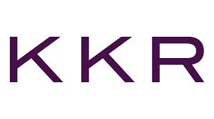

About Me
Who Am I?

My name is Amy Dodrill, I'm 23 years old and I'm in my final year of Business Studies in DCU. I attended secondary school in Terenure, where I made great friends and memories, however, business definitely wasn't my favourite subject. I went on to chose a business degree, as at the time, I had no idea what I wanted to do with my life. I'd already dropped out of one college course (Health and Performance Science in UCD), and I wanted to make sure that wouldn't happen again. Business seemed like a good idea as it's so broad, and I can confirm, I still don't have an exact idea of what I want to do with my life, but I know business is definitely the field for me. I also really enjoyed my course and my four years in DCU, which is also a plus! I decided to specialise in Data Analytics as it seemed as if this is the direction the business world is heading in. I believe that the skills I've learnt throughout the year will definitley benefit me in my career in the future. I've worked alongside my education since I was 16 years old, which I feel has given me a great work ethic, which should hopefully benefit me in the corporate world.
Career Goals
As mentioned above, I've no idea what my career will look like in 5-10 years time, however I do have a rough idea of what type of career I would like to strive towards. I completed an internship in KKR, an investment firm, as part of my third year of college. I worked in operations and I really enjoyed my time their and I think I'd like to go back into the finance field. However, not in the traditional "accounting" sense. Within the operations team, we used a variety of analytics tools to assist us in reconciling data everyday. I believe I could work in a job like this, and put my data analytics skills to use, to make the day-to-day operations easier.
Resume